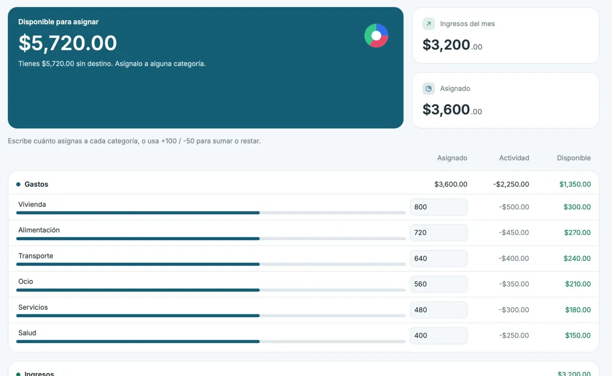
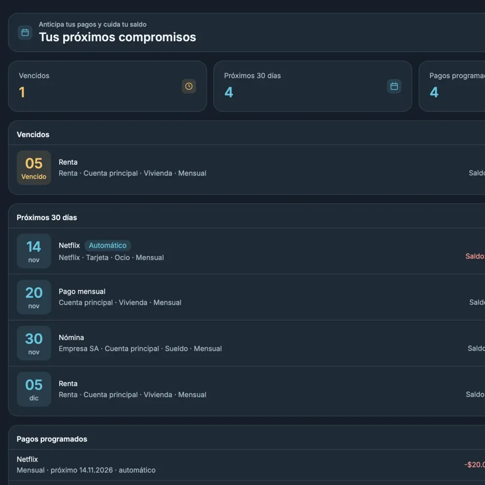
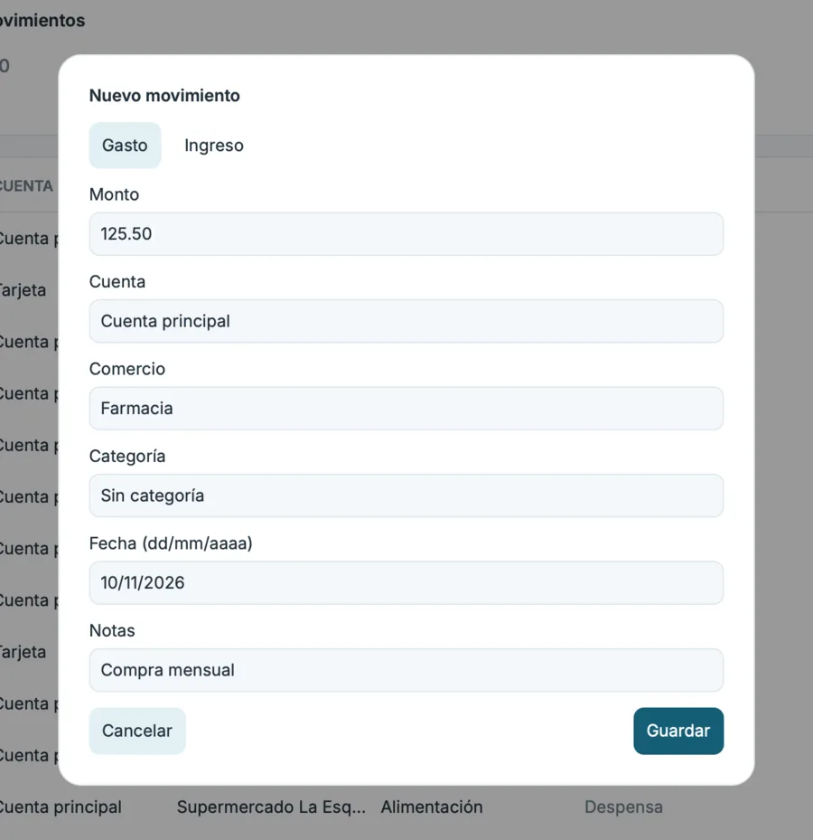
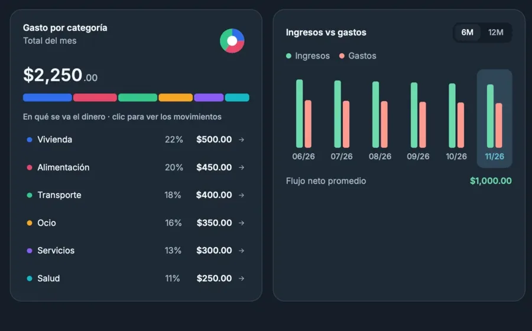
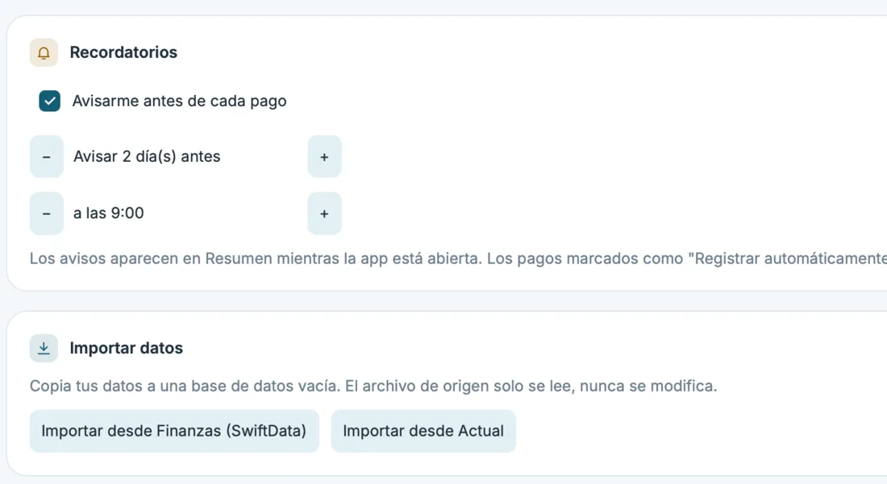
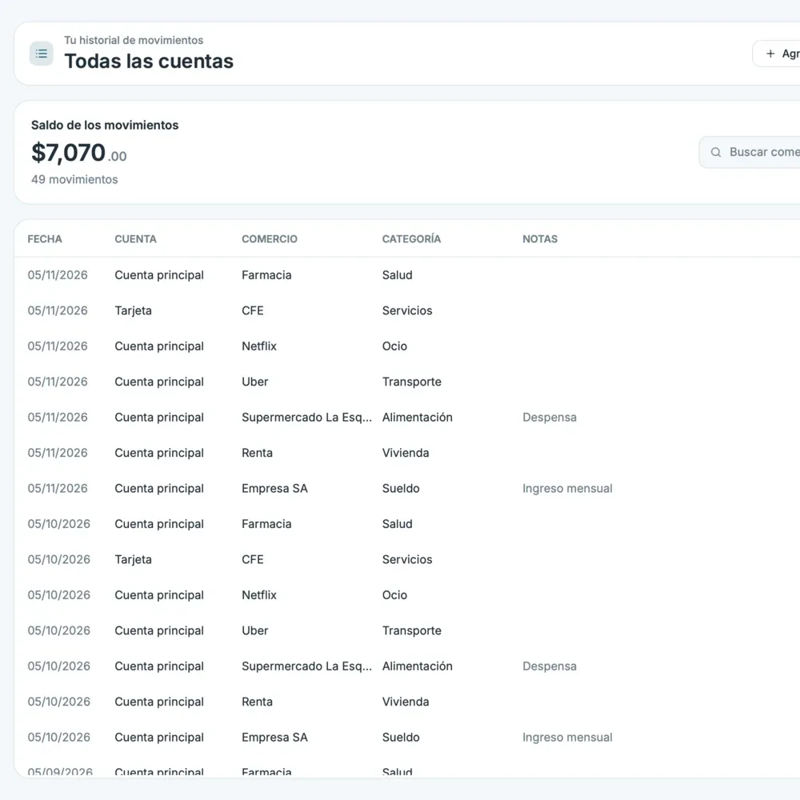

Reparte tu ingreso en sobres
Escribe cuánto va a cada categoría o usa +100 y −50. Ves al momento cuánto queda disponible.

Presupuesto por sobres, pagos programados y un saldo previsto del mes, guardados en un archivo SQLite en tu computadora. Gratis para macOS, Windows y Linux.
Renta, servicios y suscripciones aparecen con su fecha y con el saldo que te queda después de cada uno. Regístralos o sáltalos con un clic.

Escribe cuánto va a cada categoría o usa +100 y −50. Ves al momento cuánto queda disponible.

Monto, cuenta, comercio y categoría en una sola hoja. Después lo buscas, lo editas o lo borras.

El gasto del mes por categoría y las barras de ingresos contra gastos de 6 o 12 meses.

Trae tus cuentas, movimientos y presupuestos desde Actual Budget o desde la app anterior de Finanzas.

Tus cuentas y movimientos viven en un archivo SQLite en tu computadora. Sin cuenta, sin nube y sin telemetría.
Con finanzas-mcp, asistentes como Claude consultan y registran movimientos por ti, aunque la app esté cerrada.
{
"mcpServers": {
"finanzas": {
"command":
"/Applications/Finanzas.app/Contents/MacOS/finanzas-mcp"
}
}
}
Apple Silicon, macOS 11 o superior. La primera vez: clic derecho → Abrir. Con Homebrew: brew tap leoglez10/finanzas https://github.com/Leoglez10/finanzas y brew install --cask finanzas.
Windows 10 u 11 de 64 bits. En SmartScreen: “Más información” → “Ejecutar de todas formas”.
x86_64. En Debian y Ubuntu, el .deb; en otras distribuciones, el .tar.gz.
Los instaladores aún no están firmados. La app te avisa cuando hay una versión nueva. Ver todas las versiones

¿Encontraste un error o falta algo? Abre un reporte en GitHub.
Nada. Finanzas es gratis y de código abierto, con licencia MIT.
En un solo archivo SQLite en tu computadora. No hay cuenta, ni nube, ni telemetría.
Sí. En Ajustes importas desde Actual Budget o desde la app anterior de Finanzas hecha con SwiftData.
No. El instalador de macOS es para Apple Silicon, M1 o posterior, con macOS 11 o superior.
Cierra la app y copia el archivo finanzas.db. Para restaurarlo, ponlo de vuelta en la misma carpeta.
En Rust, con la interfaz Rune dibujada por la GPU.